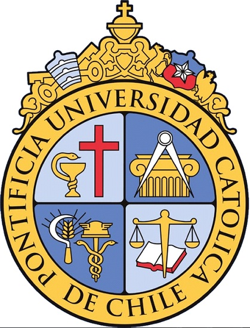
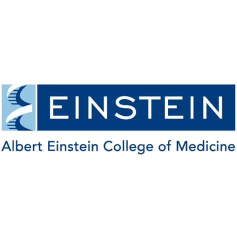

Undergraduate training in biochemical dynamics, metabolic networks, analytical instrumentation, laboratory synthesis, and quantitative physical chemistry.

Graduate coursework in molecular biophysics, enzymatic mechanisms, molecular genetics, and biostatistics, establishing foundational computational modeling principles.
Full 5-year doctoral program with honors. Comprehensive research on microbial genetics, virulence mechanisms, and cellular signaling networks. Awarded full National CONICYT-Chile Doctoral Fellowship.

Intensive training in next-generation high-throughput sequencing (NGS), whole-exome and RNA-seq bioinformatic pipelines, quality metric benchmarks, and clinical variant calling algorithms in New York, USA.